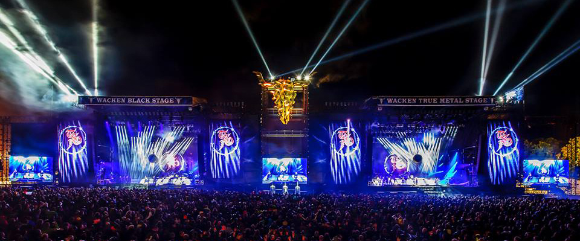

Festival na Alemanha
Trans-Siberian Orchestra se apresentará ao vivo no palco do Wacken 2015, seguido imediatamente por um show de reunião do Savatage.
Trans-Siberian Orchestra se apresentará ao vivo no palco do Wacken 2015, seguido imediatamente por um show de reunião do Savatage.
Rock é um termo abrangente que define o gênero musical popular que se desenvolveu durante e após a década de 1950. Suas raízes se encontram no rock and roll e no rockabilly que emergiu e se definiu nos Estados Unidos da América no final dos anos quarenta e início dos cinquenta, que evoluiu do blues, da música country e do rhythm and blues, entre outras influências musicais que ainda incluem o folk, o jazz e a música clássica. Todas estas influências combinadas em uma simples estrutura musical baseada no blues que era "rápida, dançável e pegajosa".
No final das década de 1960 e início dos anos setenta, o rock desenvolveu diferentes subgêneros. Quando foi misturado com a folk music ou com o blues ou com o jazz, nasceram o folk rock, o blues-rock e o jazz-rock respectivamente. Na década de 1970, o rock incorporou influências de gêneros como a soul music, o funk e de diversos ritmos de países latino-americanos. Ainda naquela década, o rock gerou uma série de outros subgêneros, tais como o soft rock, o glam rock, o heavy metal, o hard rock, o rock progressivo e o punk rock. Já nos anos oitenta, os subgêneros que surgiram foram a New Wave, o punk hardcore e rock alternativo. E na década de 1990, os sub-gêneros criados foram o grunge, o britpop, o indie rock e o nu metal.
A maioria dos grupos de rock são constituídos por um vocalista, um guitarrista, um baixista e um baterista, formando um quarteto. Alguns grupos omitem uma ou mais destas funções e/ou utilizam um vocalista que toca um instrumento enquanto canta, às vezes formando um trio ou duo; outros ainda adicionam outros músicos, como um ou dois guitarristas e/ou tecladista. Mais raramente, os grupos também utilizam saxofonistas ou trompetistas e até instrumentos como violinos com cordas ou cellos.